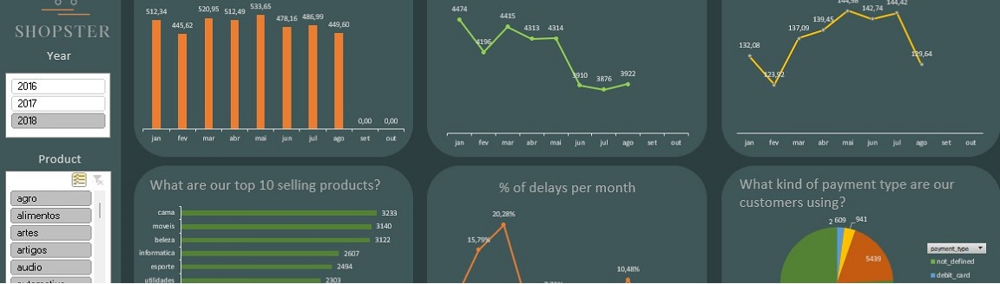

E-commerce monitoring
Excel project
The e-commerce monitoring project aimed to answer the following questions about the business based on the provided data: Quantity of products sold per month and per year, Distribution of sales by payment method, Total revenue, Average order value, Top 10 best-selling products, and percentage of late products.
With these questions, managers can make informed decisions, such as which products to invest in, which sales channels are most profitable, how sales are performing over time, whether they are growing or not, and if there is a pattern of low sales during certain months. This information can help develop marketing strategies to improve sales during those periods.
Furthermore, in the future, to further enhance the profitability of the business, it would be possible to track which regions/states have the most buyers and whether there is a pattern of product preferences in each region/state. This can help develop more focused and specialized marketing strategies for each region.
Overall, this project provides valuable insights for business decision-making and can help drive growth and profitability.
You can see the project here: E-commerce monitoring